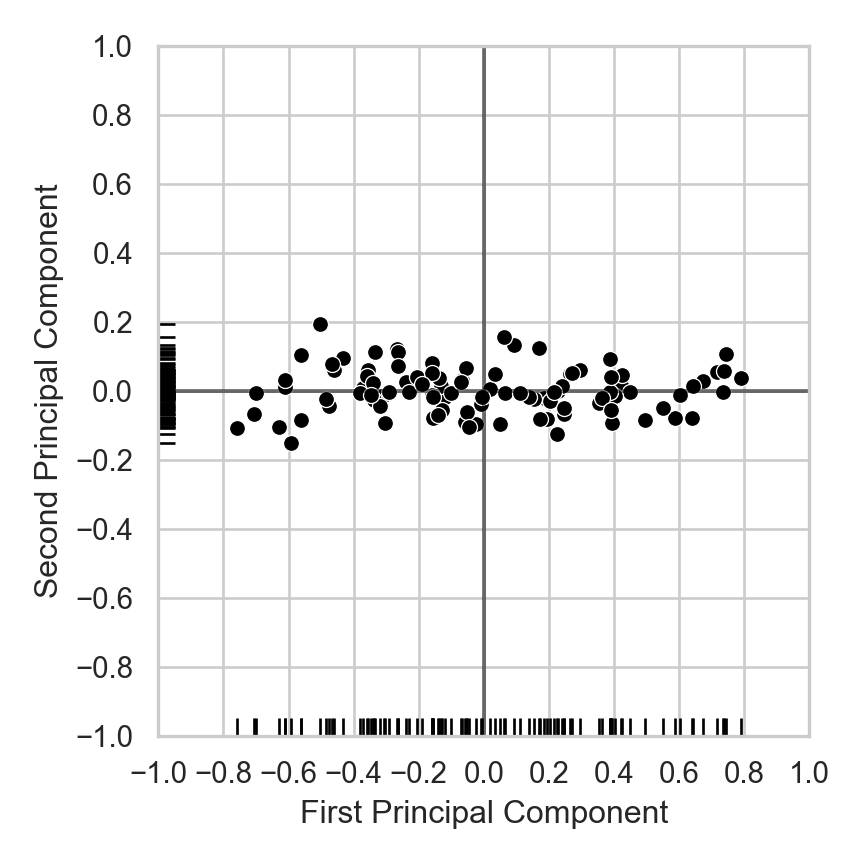

Code
source("../_globals.r")DSAN 5000: Data Science and Analytics
Section 02
source("../_globals.r")cb_palette = ["#E69F00", "#56B4E9", "#009E73", "#F0E442", "#0072B2", "#D55E00", "#CC79A7"]
from IPython.display import Markdown
def disp(df, floatfmt='g', include_index=True):
return Markdown(
df.to_markdown(
floatfmt=floatfmt,
index=include_index
)
)
def summary_to_df(summary_obj, corner_col = ''):
reg_df = pd.DataFrame(summary_obj.tables[1].data)
reg_df.columns = reg_df.iloc[0]
reg_df = reg_df.iloc[1:].copy()
# Save index col
index_col = reg_df['']
# Drop for now, so it's all numeric
reg_df.drop(columns=[''], inplace=True)
reg_df = reg_df.apply(pd.to_numeric)
my_round = lambda x: round(x, 2)
reg_df = reg_df.apply(my_round)
numeric_cols = reg_df.columns
# Add index col back in
reg_df.insert(loc=0, column=corner_col, value=index_col)
# Sigh. Have to escape | characters?
reg_df.columns = [c.replace("|","\|") for c in reg_df.columns]
return reg_df\[ \DeclareMathOperator*{\argmax}{argmax} \DeclareMathOperator*{\argmin}{argmin} \newcommand{\bigexpect}[1]{\mathbb{E}\mkern-4mu \left[ #1 \right]} \newcommand{\definedas}{\overset{\text{defn}}{=}} \newcommand{\definedalign}{\overset{\phantom{\text{defn}}}{=}} \newcommand{\eqeventual}{\overset{\text{eventually}}{=}} \newcommand{\expect}[1]{\mathbb{E}[#1]} \newcommand{\expectsq}[1]{\mathbb{E}^2[#1]} \newcommand{\fw}[1]{\texttt{#1}} \newcommand{\given}{\mid} \newcommand{\green}[1]{\color{green}{#1}} \newcommand{\heads}{\outcome{heads}} \newcommand{\iqr}{\text{IQR}} \newcommand{\kl}{\text{KL}} \newcommand{\lik}{\mathcal{L}} \newcommand{\mle}{\textsf{ML}} \newcommand{\orange}[1]{\color{orange}{#1}} \newcommand{\outcome}[1]{\textsf{#1}} \newcommand{\param}[1]{{\color{purple} #1}} \newcommand{\paramDist}{\param{\boldsymbol\theta_\mathcal{D}}} \newcommand{\pgsamplespace}{\{\green{1},\green{2},\green{3},\purp{4},\purp{5},\purp{6}\}} \newcommand{\prob}[1]{P\left( #1 \right)} \newcommand{\purp}[1]{\color{purple}{#1}} \newcommand{\red}[1]{\color{red}#1} \newcommand{\spacecap}{\; \cap \;} \newcommand{\spacewedge}{\; \wedge \;} \newcommand{\tails}{\outcome{tails}} \newcommand{\Var}[1]{\text{Var}[#1]} \newcommand{\bigVar}[1]{\text{Var}\mkern-4mu \left[ #1 \right]} \]
Today’s Planned Schedule (Section 02):
| Start | End | Topic | Recording | |
|---|---|---|---|---|
| Lecture | 12:30pm | 1:00pm | Quiz Prep → | |
| 1:00pm | 1:20pm | Quiz 4.2 | ||
| 1:20pm | 2:00pm | Dimensionality Reduction → | ||
| Break! | 2:00pm | 2:10pm | ||
| Lab | 2:10pm | 2:40pm | Dimensionality Reduction Lab → | |
| 2:40pm | 3:00pm | Student Presentation |
library(tidyverse)
library(patchwork)
N <- 100
sigma_lin <- 0.25
x_vals <- seq(from = 0, to = 1, by = 1/N)
y_lin_latent <- 3 * x_vals
epsilon_lin <- rnorm(N, 0, sigma_lin)
y_lin_vals <- y_lin_latent + epsilon_lin
linear_df <- tibble(x=x_vals, y=y_lin_vals)
lin_plot <- ggplot(linear_df, aes(x=x, y=y)) +
geom_point(size = g_pointsize / 2) +
dsan_theme('quarter') +
labs(
title = "Underlying Function: y = 3x"
)
lin_plot
print_corrs <- function(x, y) {
pearson <- cor(x, y, method="pearson")
pearson_str <- sprintf("%.3f", pearson)
spearman <- cor(x, y, method="spearman")
spearman_str <- sprintf("%.3f", spearman)
writeLines(paste0("Pearson: ",pearson_str,", Spearman: ",spearman_str))
}
print_corrs(x_vals, y_lin_vals)
sigma_exp <- 5
y_exp_latent <- exp(5 * x_vals)
epsilon_exp <- rnorm(N, 0, sigma_exp)
y_exp_vals <- y_exp_latent + epsilon_exp
exp_df <- tibble(x = x_vals, y = y_exp_vals)
exp_plot <- ggplot(exp_df, aes(x=x, y=y)) +
geom_point(size = g_pointsize / 2) +
dsan_theme('quarter') +
labs(
title = "Underlying Function: y = exp(5x)"
)
exp_plot
print_corrs(x_vals, y_exp_vals)
Pearson: 0.957, Spearman: 0.959Pearson: 0.868, Spearman: 0.944| Approach | How It Works |
|---|---|
| Wrapper Methods | Predictive model for scoring different feature subsets |
| Filter Methods | Wrapper approach, but with a proxy measure for feature subset score |
| Embedded Methods | Feature selection integrated into the model construction process itself |
\[ \mu(S) = \frac{1}{|S|}\sum_{\mathbf{x}_i \in S}\mathbf{x}_i \]
\[ \begin{align*} \mathbf{x}_1 &= (\phantom{0}0\phantom{0}, 0) \\ \mathbf{x}_2 &= (\phantom{0}1\phantom{0}, 0) \\ \mathbf{x}_3 &= (0.5~, 1) \end{align*} \]
\[ \implies \]
\[ \mu(\mathbf{X}) = \left( \frac{1}{2}, \frac{1}{3} \right) \\ \]
simple_df <- tribble(
~x, ~y,
0, 0,
1, 0,
0.5, 1
)
cent_x_simple <- mean(simple_df$x)
cent_y_simple <- mean(simple_df$y)
cent_df_simple <- tibble(x=cent_x_simple, y=cent_y_simple)
ggplot(simple_df, aes(x=x, y=y)) +
geom_point(size = g_pointsize) +
geom_point(
data=cent_df_simple,
aes(x=x, y=y),
shape=4, stroke=4, color='black',
size = g_pointsize * 1.5
) +
geom_point(
data=cent_df_simple,
aes(x=x, y=y),
shape=19, color='white',
size = g_pointsize / 2) +
dsan_theme('quarter') +
labs(
title = "Centroid of Three Points"
) +
theme(
axis.title.x = element_blank()
)N <- 250
r1_vals <- runif(N, 0, 1)
r2_vals <- runif(N, 0, 1)
triangle_df <- tibble(r1=r1_vals, r2=r2_vals)
v1 <- c(0,0)
v2 <- c(1,0)
v3 <- c(0,1)
triangle_df <- triangle_df |> mutate(
bary_w1 = 1 - sqrt(r1),
bary_w2 = sqrt(r1) * (1 - r2),
bary_w3 = sqrt(r1) * r2
)
triangle_df <- triangle_df |> mutate(
x = bary_w1 * v1[1] + bary_w2 * v2[1] + bary_w3 * v3[1],
y = bary_w1 * v1[2] + bary_w2 * v2[2] + bary_w3 * v3[2]
)
triangle_cent_x <- mean(triangle_df$x)
triangle_cent_y <- mean(triangle_df$y)
triangle_cent_df <- tibble(x=triangle_cent_x, y=triangle_cent_y)
triangle_plot <- ggplot(
triangle_df,
aes(x=x, y=y)
) +
geom_point(
size = g_pointsize / 2,
color=cbPalette[1]
) +
geom_point(
data=triangle_cent_df,
aes(x=x, y=y),
shape=4, stroke=4, color='black',
size = g_pointsize * 1.5) +
geom_point(
data=triangle_cent_df,
aes(x=x, y=y),
shape=19, color='white',
size = g_pointsize / 2) +
dsan_theme('quarter')
# Now a rectangle
x_coords_rect <- runif(N, 0.5, 1)
y_coords_rect <- runif(N, 0.5, 1)
rect_df <- tibble(x=x_coords_rect, y=y_coords_rect)
cent_x_rect <- mean(x_coords_rect)
cent_y_rect <- mean(y_coords_rect)
cent_df_rect <- tibble(x=cent_x_rect, y=cent_y_rect)
rect_plot <- triangle_plot +
geom_point(
data=rect_df,
aes(x=x, y=y),
size = g_pointsize / 2,
color=cbPalette[2]
) +
geom_point(
data=cent_df_rect,
aes(x=x, y=y),
shape=4, stroke=4, color='black',
size = g_pointsize * 1.5) +
geom_point(
data=cent_df_rect,
aes(x=x, y=y),
shape=19, color='white',
size = g_pointsize / 2) +
dsan_theme('half') +
theme(
axis.title.x = element_blank()
)
rect_plot (For those interested, see the appendix slide for how we can efficiently sample points uniformly from the triangle)
(Check out this incredibly helpful writeup covering each of these methods: it’s what I look at for reference whenever I’m trying to figure out a good value for \(K\) in my research!)

\[ \text{Gap}_N(k) = \mathbb{E}_{\mathbf{X}_0}[\log(W_k)] - \log(W_k) \]
library(tidyverse)
library(patchwork)
library(MASS)
library(latex2exp)
N <- 300
x_coords_unif <- runif(N, 0, 1)
y_coords_unif <- runif(N, 0, 1)
unif_df <- tibble(x = x_coords_unif, y = y_coords_unif)
unif_df <- unif_df |> mutate(
cluster = ifelse(y <= 0.5, 3, ifelse(x <= 0.5, 1, 2))
)
plot_title <- TeX(r"(Null Distribution $X_0$, k = 3)")
unif_gap_plot <- ggplot(unif_df, aes(x=x, y=y, color=factor(cluster))) +
geom_point(size = g_pointsize / 2) +
dsan_theme('half') +
labs(
title = plot_title,
color = "Cluster"
) +
coord_equal()
unif_gap_plot
N_cluster <- 100
sigma <- 0.01
Sigma <- matrix(c(sigma, 0, 0, sigma), nrow=2)
Mu1 <- c(0.2, 0.8)
Mu2 <- c(0.8, 0.8)
Mu3 <- c(0.5, 0.2)
cluster1 <- as_tibble(mvrnorm(N_cluster, Mu1, Sigma))
cluster1 <- cluster1 |> mutate(cluster = 1)
#print(cluster1)
cluster2 <- as_tibble(mvrnorm(N_cluster, Mu2, Sigma))
cluster2 <- cluster2 |> mutate(cluster = 2)
cluster3 <- as_tibble(mvrnorm(N_cluster, Mu3, Sigma))
cluster3 <- cluster3 |> mutate(cluster = 3)
cluster_df <- bind_rows(cluster1, cluster2, cluster3)
colnames(cluster_df) <- c("x","y","cluster")
cluster_gap_plot <- ggplot(cluster_df, aes(x=x, y=y, color=factor(cluster))) +
geom_point(size = g_pointsize / 2) +
dsan_theme('half') +
labs(
title = "Actual Data X, k = 3",
color = "Cluster"
) +
coord_equal()
cluster_gap_plot

import matplotlib.cm as cm
import matplotlib.pyplot as plt
import numpy as np
from sklearn.cluster import KMeans
from sklearn.datasets import make_blobs
from sklearn.metrics import silhouette_samples, silhouette_score
# Generating the sample data from make_blobs
# This particular setting has one distinct cluster and 3 clusters placed close
# together.
X, y = make_blobs(
n_samples=500,
n_features=2,
centers=4,
cluster_std=1,
center_box=(-10.0, 10.0),
shuffle=True,
random_state=5000
)
def silhouette_plot(n_clusters):
# Create a subplot with 1 row and 2 columns
fig, (ax1, ax2) = plt.subplots(1, 2)
fig.set_size_inches(8, 3.5)
# The 1st subplot is the silhouette plot
# The silhouette coefficient can range from -1, 1 but in this example all
# lie within [-0.1, 1]
ax1.set_xlim([-0.1, 1])
# The (n_clusters+1)*10 is for inserting blank space between silhouette
# plots of individual clusters, to demarcate them clearly.
ax1.set_ylim([0, len(X) + (n_clusters + 1) * 10])
# Initialize the clusterer with n_clusters value and a random generator
# seed of 10 for reproducibility.
clusterer = KMeans(n_clusters=n_clusters, n_init="auto", random_state=10)
cluster_labels = clusterer.fit_predict(X)
# The silhouette_score gives the average value for all the samples.
# This gives a perspective into the density and separation of the formed
# clusters
silhouette_avg = silhouette_score(X, cluster_labels)
#print(
# "For n_clusters =",
# n_clusters,
# "The average silhouette_score is :",
# silhouette_avg,
#)
# Compute the silhouette scores for each sample
sample_silhouette_values = silhouette_samples(X, cluster_labels)
y_lower = 10
for i in range(n_clusters):
# Aggregate the silhouette scores for samples belonging to
# cluster i, and sort them
ith_cluster_silhouette_values = sample_silhouette_values[cluster_labels == i]
ith_cluster_silhouette_values.sort()
size_cluster_i = ith_cluster_silhouette_values.shape[0]
y_upper = y_lower + size_cluster_i
color = cm.nipy_spectral(float(i) / n_clusters)
ax1.fill_betweenx(
np.arange(y_lower, y_upper),
0,
ith_cluster_silhouette_values,
facecolor=color,
edgecolor=color,
alpha=0.7,
)
# Label the silhouette plots with their cluster numbers at the middle
ax1.text(-0.05, y_lower + 0.5 * size_cluster_i, str(i))
# Compute the new y_lower for next plot
y_lower = y_upper + 10 # 10 for the 0 samples
ax1.set_title("Silhouette Plot")
ax1.set_xlabel("Silhouette Values")
ax1.set_ylabel("Cluster Label")
# The vertical line for average silhouette score of all the values
ax1.axvline(x=silhouette_avg, color="red", linestyle="--")
ax1.set_yticks([]) # Clear the yaxis labels / ticks
ax1.set_xticks([-0.1, 0, 0.2, 0.4, 0.6, 0.8, 1])
# 2nd Plot showing the actual clusters formed
colors = cm.nipy_spectral(cluster_labels.astype(float) / n_clusters)
ax2.scatter(
X[:, 0], X[:, 1], marker=".", s=30, lw=0, alpha=0.7, c=colors, edgecolor="k"
)
# Labeling the clusters
centers = clusterer.cluster_centers_
# Draw white circles at cluster centers
ax2.scatter(
centers[:, 0],
centers[:, 1],
marker="o",
c="white",
alpha=1,
s=200,
edgecolor="k",
)
for i, c in enumerate(centers):
ax2.scatter(c[0], c[1], marker="$%d$" % i, alpha=1, s=50, edgecolor="k")
ax2.set_title("Clustered Data")
ax2.set_xlabel("Feature 1")
ax2.set_ylabel("Feature 2")
# plt.suptitle(
# "Silhouette analysis for KMeans clustering on sample data with n_clusters = %d"
# % n_clusters,
# fontsize=14,
# fontweight="bold",
# )
plt.suptitle("K = " + str(n_clusters), fontsize=16, fontweight="bold")
plt.tight_layout()
plt.show()


my_vec <- tribble(
~x, ~y, ~xend, ~yend,
0, 0, 1, 1
)
my_dotted_vec <- tribble(
~x, ~y, ~xend, ~yend,
1/3, 1, 1, 1/3
)
my_point <- tribble(
~x, ~y,
2/3, 2/3,
)
my_line <- function(x) x
ggplot() +
geom_segment(
data=my_vec,
aes(x=x, y=y, xend=xend, yend=yend),
linewidth = g_linewidth,
arrow = arrow(length = unit(0.1, "npc"))
) +
geom_segment(
data=my_dotted_vec,
aes(x=x, y=y, xend=xend, yend=yend),
linewidth = g_linewidth,
linetype = "dashed"
) +
geom_point(
data=my_point,
aes(x=x, y=y, color='jeff'),
size = g_pointsize
) +
#annotate("point", x = 2/3, y = 2/3, color = cbPalette[1], size = g_pointsize) +
# geom_function(
# data=data.frame(x=c(0,1)),
# aes(x=x),
# fun=my_line,
# linewidth = g_linewidth
# ) +
annotate("text", x=1/3, y=1/3 + 0.05, label="2/3", angle=45, size=8, vjust='bottom') +
annotate("text", x=4.8/6, y=4.8/6 + 0.05, label="1/3", angle=45, size=8, vjust='bottom') +
dsan_theme('quarter') +
labs(
title = "Position of Your Boy Jeff w.r.t. v=(1,1)"
) +
theme(
title = element_text(size=18),
legend.title = element_blank(),
legend.spacing.y = unit(0, "mm")
) +
#xlim(c(0,1)) + ylim(c(0,1)) +
scale_color_manual(values=c('jeff'=cbPalette[1]), labels=c('jeff'="Your Boy Jeff")) +
coord_equal()
import pandas as pd
import numpy as np
import matplotlib.pyplot as plt
import seaborn as sns
rng = np.random.default_rng(seed = 5000)
def set_seaborn_style():
sns.set(rc={'figure.figsize':(4.5,4.5)})
sns.set_theme(style="whitegrid")
set_seaborn_style()
N = 100
slope = 1
intercept = 0
# Now with noise
sigma = 0.1
x_coords = rng.uniform(0,1,N)
# Generate normally distributed random error ~ N(0, sigma**2)
errors = rng.normal(loc=0, scale=sigma, size=N)
y_coords = slope * x_coords + intercept + errors
random_line_df = pd.DataFrame({'x':x_coords, 'y':y_coords})
sns.scatterplot(data=random_line_df, x="x", y="y", color='black')
sns.rugplot(data=random_line_df, x="x", y="y", color='black')
plt.tight_layout()
plt.show()
from sklearn.decomposition import PCA
set_seaborn_style()
pca = PCA(n_components=2).fit(random_line_df.values)
Xp = pca.transform(random_line_df.values)
Xp_df = pd.DataFrame(Xp, columns=['x','y'])
pca_scatter = sns.scatterplot(data=Xp_df, x="x", y="y", color='black')
pca_scatter.set_xlim((-1,1));
pca_scatter.set_ylim((-1,1));
custom_ticks = [-1,-0.8,-0.6,-0.4,-0.2,0,0.2,0.4,0.6,0.8,1]
pca_scatter.set_xticks(custom_ticks)
pca_scatter.set_yticks(custom_ticks)
pca_scatter.set_xlabel("First Principal Component")
pca_scatter.set_ylabel("Second Principal Component")
plt.axhline(0, color='black', alpha=0.5)
plt.axvline(0, color='black', alpha=0.5)
sns.rugplot(data=Xp_df, x="x", y="y", color='black')
plt.tight_layout()
plt.show()

library(ggjoy)
metadata <- read_csv(
"col_name , col_width
congress , 4
icpsr , 6
st_code , 3
cd , 2
st_name , 8
party_code , 5
mc_name , 15
dim_1 , 10
dim_2 , 10
dim_1_se , 10
dim_2_se , 10
dim_1_2_corr , 8
log_lik , 11
num_votes , 5
num_class_err , 5
geo_mean_prob , 10"
)
members <- read_fwf(
"assets/dwnom.DAT",
fwf_widths(widths = metadata$col_width, col_names = metadata$col_name)
)
representatives <- members %>%
filter(
congress >= 88,
!(cd %in% c(0, 98, 99)),
party_code == 100 | party_code == 200
) %>%
mutate(year1 = congress * 2 + 1787) %>%
arrange(desc(year1))
democrats <- representatives %>% filter(party_code == 100)
republicans <- representatives %>% filter(party_code == 200)
ggplot(representatives, aes(x = dim_1, y = year1, group = year1)) +
geom_joy(data = democrats, fill = "blue", scale = 7, size = 0.25, rel_min_height = 0.01, alpha = 0.2) +
geom_joy(data = republicans, fill = "red", scale = 7, size = 0.25, rel_min_height = 0.01, alpha = 0.2) +
theme_classic() +
scale_x_continuous(limits = c(-1, 1.3), expand = c(0.01, 0), breaks = seq(-1, 1, 0.5)) +
scale_y_reverse(breaks = seq(2013, 1963, -10)) +
ggtitle("Distribution of DW-NOMINATE of U.S. House by Party: 1963-2013") +
ylab("First Year of Each Congress") +
xlab("First Dimension DW-NOMINATE") +
dsan_theme('full')


N <- 250
x_coords <- runif(N, 0, 1)
y_coords <- runif(N, 0, 1 - x_coords)
data_df <- tibble(x=x_coords, y=y_coords)
cent_x <- mean(x_coords)
cent_y <- mean(y_coords)
cent_df <- tibble(x=cent_x, y=cent_y)
triangle_plot <- ggplot(
data_df,
aes(x=x, y=y)
) +
geom_point(
size = g_pointsize / 2,
color=cbPalette[1]
) +
geom_point(
data=cent_df,
aes(x=x, y=y),
shape=4, stroke=4, color='black',
size = g_pointsize * 1.5) +
geom_point(
data=cent_df,
aes(x=x, y=y),
shape=19, color='white',
size = g_pointsize / 2) +
dsan_theme('quarter')
# Now a rectangle
x_coords_rect <- runif(N, 0.5, 1)
y_coords_rect <- runif(N, 0.5, 1)
rect_df <- tibble(x=x_coords_rect, y=y_coords_rect)
cent_x_rect <- mean(x_coords_rect)
cent_y_rect <- mean(y_coords_rect)
cent_df_rect <- tibble(x=cent_x_rect, y=cent_y_rect)
rect_plot <- triangle_plot +
geom_point(
data=rect_df,
aes(x=x, y=y),
size = g_pointsize / 2,
color=cbPalette[2]
) +
geom_point(
data=cent_df_rect,
aes(x=x, y=y),
shape=4, stroke=4, color='black',
size = g_pointsize * 1.5) +
geom_point(
data=cent_df_rect,
aes(x=x, y=y),
shape=19, color='white',
size = g_pointsize / 2) +
dsan_theme('half') +
labs(
title = "Centroids for N=250 Points: Y ~ U[0,X]"
)
rect_plot
N <- 250
r1_vals <- runif(N, 0, 1)
r2_vals <- runif(N, 0, 1)
triangle_df <- tibble(r1=r1_vals, r2=r2_vals)
v1 <- c(0,0)
v2 <- c(1,0)
v3 <- c(0,1)
triangle_df <- triangle_df |> mutate(
bary_w1 = 1 - sqrt(r1),
bary_w2 = sqrt(r1) * (1 - r2),
bary_w3 = sqrt(r1) * r2
)
triangle_df <- triangle_df |> mutate(
x = bary_w1 * v1[1] + bary_w2 * v2[1] + bary_w3 * v3[1],
y = bary_w1 * v1[2] + bary_w2 * v2[2] + bary_w3 * v3[2]
)
triangle_cent_x <- mean(triangle_df$x)
triangle_cent_y <- mean(triangle_df$y)
triangle_cent_df <- tibble(x=triangle_cent_x, y=triangle_cent_y)
triangle_plot <- ggplot(
triangle_df,
aes(x=x, y=y)
) +
geom_point(
size = g_pointsize / 2,
color=cbPalette[1]
) +
geom_point(
data=triangle_cent_df,
aes(x=x, y=y),
shape=4, stroke=4, color='black',
size = g_pointsize * 1.5) +
geom_point(
data=triangle_cent_df,
aes(x=x, y=y),
shape=19, color='white',
size = g_pointsize / 2) +
dsan_theme('quarter')
# Now a rectangle
x_coords_rect <- runif(N, 0.5, 1)
y_coords_rect <- runif(N, 0.5, 1)
rect_df <- tibble(x=x_coords_rect, y=y_coords_rect)
cent_x_rect <- mean(x_coords_rect)
cent_y_rect <- mean(y_coords_rect)
cent_df_rect <- tibble(x=cent_x_rect, y=cent_y_rect)
rect_plot <- triangle_plot +
geom_point(
data=rect_df,
aes(x=x, y=y),
size = g_pointsize / 2,
color=cbPalette[2]
) +
geom_point(
data=cent_df_rect,
aes(x=x, y=y),
shape=4, stroke=4, color='black',
size = g_pointsize * 1.5) +
geom_point(
data=cent_df_rect,
aes(x=x, y=y),
shape=19, color='white',
size = g_pointsize / 2) +
dsan_theme('half') +
labs(
title = "Centroids for N=250 Points via Barycentric Coordinates"
)
rect_plot